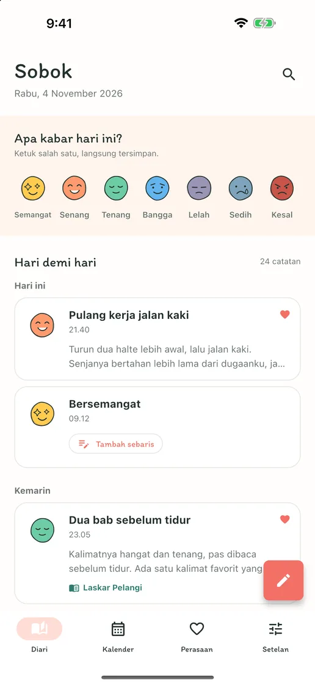
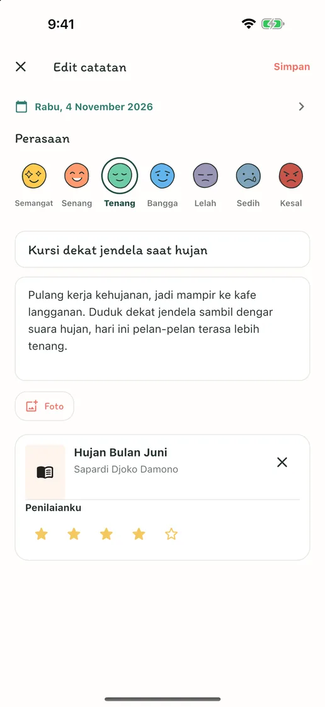
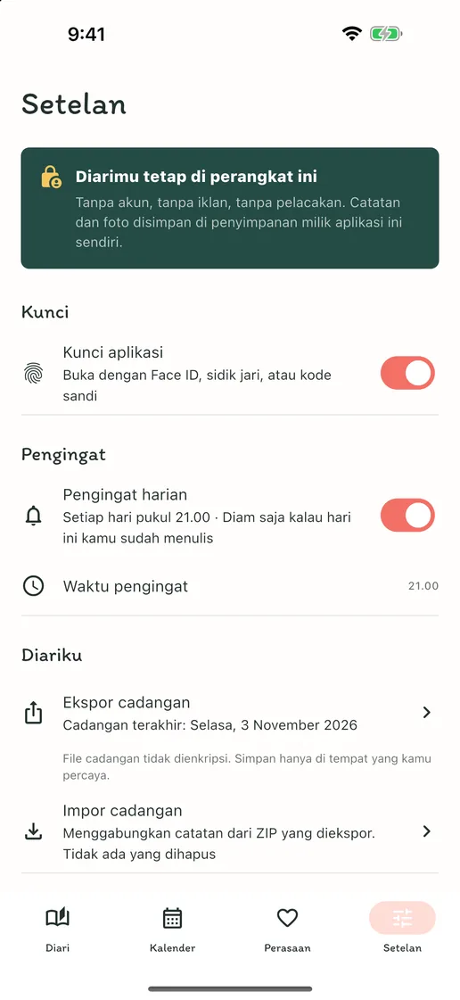
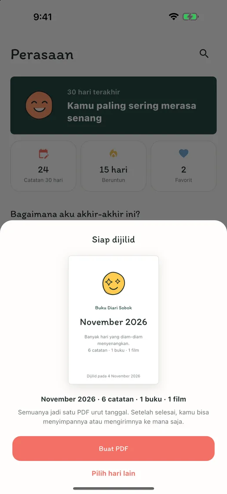
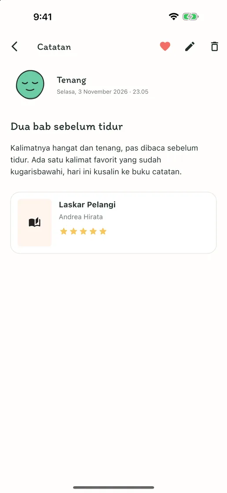
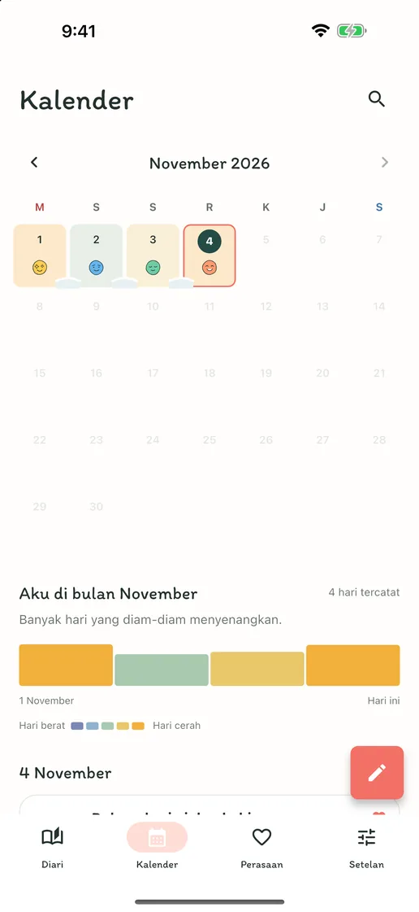
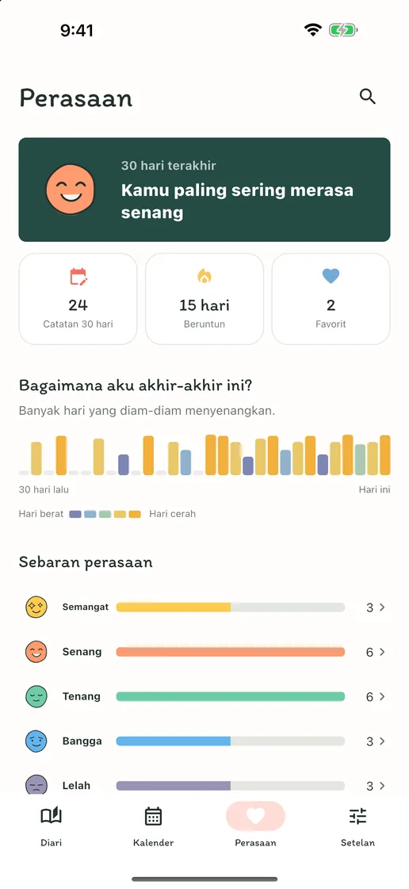

Perasaan hari ini, sekali ketuk
Ketuk salah satu dari tujuh wajah perasaan, dan itu jadi catatan hari ini. Kalau ada yang ingin diceritakan, tambahkan sebaris di catatan yang sama.
Perasaan, tulisan, buku & film
Tanpa akun, iklan, atau langganan. Ketuk satu perasaan, hari ini tersimpan. Tulisan panjang, foto, dan catatan buku serta film muat dalam satu catatan. Semua di ponselmu.
Segera hadir di App Store dan Google PlayGratis · Pembelian dalam aplikasi · iPhone dan Android · English · Deutsch · Tiếng Việt · Español · Bahasa Indonesia · 日本語 · 简体中文 · 繁體中文 · ไทย · Português · Français · 한국어


Tulis sebanyak yang kamu mau
Di hari tanpa cerita, satu ketukan pada perasaan sudah menyimpan hari ini. Di hari kamu ingin menulis, judul, tulisan panjang, foto, serta catatan tentang buku yang baru kamu baca atau film yang baru kamu tonton, semuanya muat dalam satu catatan.
Ketuk salah satu dari tujuh wajah perasaan, dan itu jadi catatan hari ini. Kalau ada yang ingin diceritakan, tambahkan sebaris di catatan yang sama.
Judul, tulisan panjang, foto, dan penilaian — tambahkan hanya yang kamu mau hari itu. Cari buku yang baru kamu baca atau film yang baru kamu tonton, atau ketik sendiri.
Setiap hari kamu menulis, perasaannya mengendap di kalender, dan hari-hari yang berturut-turut berkumpul seperti salju. Lihat sekilas pekan mana yang menyenangkan dan mana yang berat.
Di dalam aplikasi
“Sobok-sobok” adalah bunyi salju yang menumpuk pelan dalam bahasa Korea — seperti hari-harimu yang terkumpul di sini, satu per satu.





Tanpa daftar, tanpa iklan, tanpa pelacakan. Diarimu hanya disimpan di perangkatmu, dan kamu bisa mengekspor semua catatan dan foto sebagai file ZIP lalu memulihkannya di perangkat baru. Menulis, pencarian, kalender, kunci aplikasi, dan cadangan semuanya gratis; hanya Sobok Plus, yang menjilid catatanmu jadi buku diari PDF, yang merupakan pembelian satu kali.